무선설비기사 (2002-05-26 기출문제)
1과목: 디지털 전자회로
1. 아래 반전증폭회로의 출력전압은 얼마인가? (단,연산증폭기의 개방이득을 ∞라고 본다.)
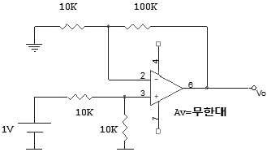
- 5.5[V]
- 10.5[V]
- 11[V]
- 21[V]
(정답률: 알수없음)

2. MOS의 논리회로의 특징이 아닌 것은?
- 높은 입력 임피던스이다
- 소비전력이 적다
- 잡음여유도가 크다
- TTL과의 혼용이 매우 용이하다
(정답률: 알수없음)
3. 다음회로의 출력은?
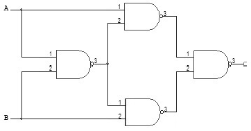
- (A+B)(A+B)
- ABㆍAB
- AB(A+B)
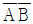
(정답률: 알수없음)
4. 그림과 같은 ECL 회로의 논리출력은? (단, Y, Y'는 출력단자)
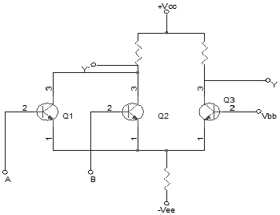
- Y: NAND, Y': AND
- Y: AND, Y': NAND
- Y: NOR, Y': OR
- Y: OR, Y': NOR
(정답률: 알수없음)
5. 다음의 내용 중에서 귀환형 발진기의 특징과 관계가 없는 항은?
- 귀환형 발진기에서는 입력신호가 필요하지 않다.
- 귀환형 발진기에서는 출력의 일부가 입력으로 정귀환 된다.
- 귀환형 발진기에서 종합 루프이득은 1이다.
- 귀환형 발진기에서 귀환회로에 반드시 인턱터(L)를 사용해야 한다.
(정답률: 알수없음)
6. M/S 플립플롭회로는 어떤 현상을 해결하기 위한 플립플롭회로인가?
- Delay현상
- Race현상
- Set현상
- Toggle현상
(정답률: 알수없음)
7. FM 증폭방식으로 사용하고 저주파 증폭기에는 사용되지 않는방식은?
- AB급
- C급 푸쉬풀(push pull)
- B급
- A급푸쉬풀(push pull)
(정답률: 알수없음)
8. 그림과 같은 교류적 등가회로의 표시되는 발진회로의 발진주파수는?
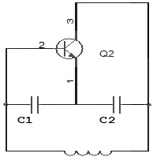
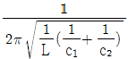
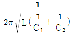
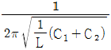
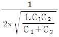
(정답률: 알수없음)
9. 다음 중 환형 계수기(ring counter)와 같은 것은?
- BCD 계수기
- 가역 계수기
- 시프트 레지스터
- 순환 시프트 레지스터
(정답률: 알수없음)
10. 다음 회로에서 Q1의 역할은? (단, Q1과 Q2의 전기력특성은 같다)
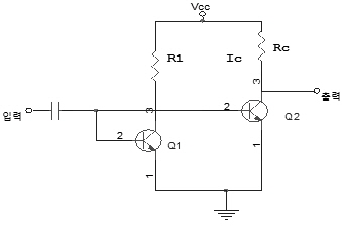
- 다이오드와 같은 작용
- 온도 보상 작용
- 높은주파수의 신호를 제거시킴
- 입력신호 증폭작용
(정답률: 알수없음)
11. 입력전압이 Vi, 출력전류가 io일 때, 다음식은 출력전류와 입력전압의 비선형 관계를 표시한 식이다. 진폭변조와 관계되는 항은? (단, A0, A1, A2, A3, … 상수이다.)
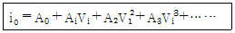
- A0 항이다.
- A1Vi 항이다.
- A2Vi2항이다.
- A3Vi3 항이다.
(정답률: 알수없음)
12. 그림과 같은 이상 변압기에 반파정류회로를 구성하여 스위치 S를 개방하였다면 이때 C의 양단 AB에 충전된 전압은 얼마인가?
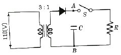
- 약45[V]
- 약52[V]
- 약60[V]
- 약74[V]
(정답률: 알수없음)
13. 다음 회로가 나타내는 전달특성은? (단, D는 이상적인 다이오드이다)
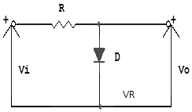
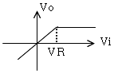
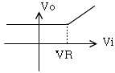
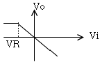
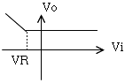
(정답률: 알수없음)
14. 그림과 같은 연산증폭기를 이용한 Quadrature발진회로에서 출력되는 발진주파수 fo는? (단, R1 = 200[㏀], R2 = R3 = 150[㏀], C1 = C2 = C3 = 0.001[㎌])
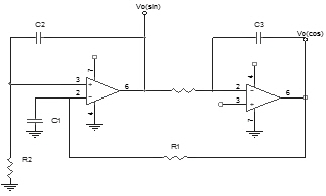
- 1.06[㎑]
- 2.24[㎑]
- 3.56[㎑]
- 4.48[㎑]
(정답률: 알수없음)
15. IC = 12[mA]인때 VCE=6[V]이고, β=100, VBE=0.7[V]라고 하고 역포화 전류(reverse saturation current)를 무시하는 경우 RC를 구하시오.
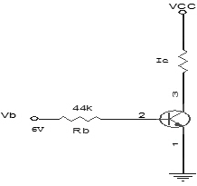
- RC=1.5[㏀]
- RC=1[㏀]
- RC=500[Ω]
- RC=100[Ω]
(정답률: 알수없음)
16. 다음 중 NOR 게이트로 구성된 R-S 플립플롭에 대한 설명이 아닌 것은?
- S = R = 0 이면 상태 변화는 없고 처음 상태로 유지한다
- S = 0, R = 1 일 때 Qn 이 0이면 변화가 없고 Qn이 1이면Qn+1은 0으로 reset된다
- S = 1, R = 1일 때 Qn이 0이면 Qn+1은 1로 set 되고 Qn이 1 이면변화없다
- S = R = 1 일 때 입력이 가해지면 어떤 출력이 나타날지 불확실하므로 부정상태로 금지조건이다
(정답률: 알수없음)
17. 직력전압 부궤환을 이용한 증폭회로에서 주파수가 높으면 부궤환량이 증가되는 회로는?
- AGC
- AVC
- AFC
- ATC
(정답률: 알수없음)
18. 그림과 같은 P-MOS 게이트 기능을 나타내는 논리식은? (단, 부논리이다)
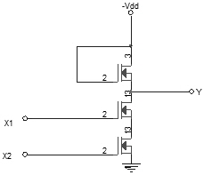
- Y= X1+ X2
- Y= X1ㆍX2
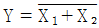
- Y= X1ㆍX2
(정답률: 알수없음)
19. 그림과 같은 회로에서 입력에 Vi = 50 sinωt[V]인 정현파를 가했을 때 출력 Vo의 파형으로 옳은 것은? (단, D1, D2의 항복전압은 10[V]이다)
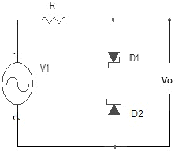
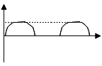
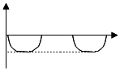
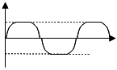
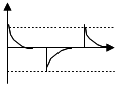
(정답률: 알수없음)
20. 그림과 같은 직선 검파회로에서 diagonal clipping이 생기는 이유로서 옳은 것은? (단, ma는 변조지수, Ws는 변조신호의 각주파수)
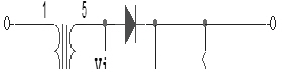
- 시정수 RC가 너무 작기 때문
- 시정수 RC가 너무 크기 때문
- RC＞1/(maㆍWs)
- RC≫1/(maㆍWs)
(정답률: 알수없음)
2과목: 무선통신 기기
21. 어떤 반파정류 회로의 전압을 측정하였더니 최고치가 10(V)이었다. 이때의 파고율은 얼마인가?
- 2
- 7.07
- 1.414
- 5
(정답률: 알수없음)
22. SSB 수신기에서 자동 이득 조정이 곤란한 이유는?
- 측대파가 없으므로
- 신호주파수가 적으므로
- 송신 출력이 적으므로
- 반송파가 없으므로
(정답률: 알수없음)
23. AM 슈퍼헤타로다인 수신기에서 중간주파수의 선정에 있어 고려될 필요가 없는 것은?
- 영상 주파수 방해
- 단일조정의 용이성
- 초고주파에 의한 방해
- 국부 발진기의 주파수 안정도
(정답률: 알수없음)
24. GMDSS설비의 DSC 단파송신장치는 기준설비의 어느장비의 역할을 하는것인가?
- Auto-keyer
- Auto-Alarm
- 보조송신기
- 보조수신기
(정답률: 알수없음)
25. 정보, 제어분야의 각종기기는 교류전원의 순간적인 중단을 허용치 않는 경우 무정전 장치를 설치해야 한다. 정지형 무정전장치에 사용되는 전력제어회로는?
- 주파수변환장치
- 인버터
- 교류정전압 장치
- 정주파 정전압장치
(정답률: 알수없음)
26. 대역폭인 10[㎑]인 슈퍼헤테로다인 수신기에서 1200[㎑]로 방송을 수신하고 있을 때 영상주파수는? (단, 중간주파수는 455[㎑]이다)
- 1210[㎑]
- 1655[㎑]
- 2110[㎑]
- 2855[㎑]
(정답률: 알수없음)
27. 지구국 안테나의 포인팅(pointing) 손실이란 정확히 무엇을 말하는가?
- 안테나의 기계적인 결함에 의한손실
- 안테나의 이득저하에 의한 손실
- 안테나빔의 확산에 의한 손실
- 안테나의 위성추적 오차에 의한 손실
(정답률: 알수없음)
28. 위성의 제어를 위하여 위성에 있는 각 장치의 전기적인 상태 및 센서로 감지한 열에 대한 데이터의 정보를 지구국에 송신하는 기능을 갖는 장치를 무엇이라하는가?
- 자세제어시스템
- Telemetry시스템
- 열제어 시스템
- 전원제어시스템
(정답률: 알수없음)
29. 다음 상태는 스펙트럼분석기로 각종 발진기를 측정한 상태를 나타낸 것이다. 이 때의 이상적인 발진기의 상태는?
- 거의 균일한 크기의 스펙트럼이 많이 나타났다
- 중앙의 스펙트럼이 유난히 작고 주위의 스펙트럼이 매우크다
- 중앙의 스펙트럼이 매우 크며 주위에 매우 미소한 스펙트럼 분포
- 전체적으로 대칭상태의 많은 스펙트럼의 분포
(정답률: 알수없음)
30. 아나로그 통신방식에 비하여 펄스 통신방식(PCM)의 장점 설명으로 옳지 않은 것은?
- 잡음에 대한 영향을 적게 받는다
- 경제성이 우수하다
- 주파수 대역폭이 좁다
- 정보의 기억 및 다양한 처리를 할 수 있다
(정답률: 알수없음)
31. 다음 설명중 FM수신기의 스퀼치(SQUELCH)회로의 적응에 맞지 않는 것은?
- 수신신호가 약하거나 없을 때 잡음 출력이 커지는 것을 방지한다
- 잡음이 커지면 자동적으로 가청주파수 증폭기 기능을 정지한다
- 잡음 증폭과 잡음 정류 기능을 갖추고 있다
- 수신기 감도를 향상시켜 준다
(정답률: 알수없음)
32. 다음은 공중선의 실효저항 측정회로이다. 스위치S를 닫고 희망주파수 f에 동조시킬 때 공중선 전류계 A2 지시를 l1이라고 한다. 다음에 s를 열고 A2지시 l2를 읽는다. 실효 저항은 Re는 얼마인가?
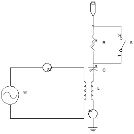
- Re= l1R-l2
- Re= (l1 - R)l2
- Re= (l2- l1)R
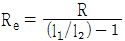
(정답률: 알수없음)
33. 수정 발진회로에서 수정 진동자의 전기적 직렬 공진 주파수를 fs, 병렬 공진 주파수를 fp라 하면 안정한 발진을 하기 위한 동작 출력 주파수 fo는 아래 어느것인가?
- fs＜fo＞fp
- fs＜fo＜fp
- fs＞fo＞fp
- fo = fs
(정답률: 알수없음)
34. 전계강도 측정에 관하여 잘못된 것은?
- 수신안테나는 무지향성 안테나를 사용하여야 한다.
- HF대 이하에서는 loop 안테나, VHF대에서는 반파장 다이폴 안테나를 많이 사용한다.
- 1[㎶/m]를 0[㏈]로서 나타낸다.
- 송배선 전선이나 철탑 그 밖에 전파를 반사 및 흡수하는 물체가 부근에 없는 장소를 택한다.
(정답률: 알수없음)
35. 어떤 전원 정류기에서 전부하의 출력전압이 250[V]일 때 전압변동률 20[%]일 경우 무부하시 전압은?
- 500[V]
- 312.5[V]
- 300[V]
- 475[V]
(정답률: 알수없음)
36. 차동증폭기에서 CMRR(common mode refection ratio)은 ?
- 작을수록 좋다.
- 클수록 좋다.
- 커지면 증폭기의 오차가 증가한다.
- 작아지면 증폭기의 오차가 감소한다.
(정답률: 알수없음)
37. 무선 송신기의 송신 주파수 변동을 줄이기 위한 대책이 아닌 것은?
- 전원의 안정도를 높인다.
- 발진기의 출력단 사이에 완충증폭기를 넣는다.
- 발진기의 동조회로 Q가 낮은 부품을 사용한다.
- 발진기의 코일과 콘덴서의 온도계수를 상쇄하도록 부품을 선택한다.
(정답률: 알수없음)
38. RC 결합 증폭기에서 고주파 및 저주파 특성을 제한하는 요소와 가장 관계 깊은 것은?
- 바이패스 콘덴서 저항
- 결합콘덴서, 저항
- 출력 임피던스, 입력저항
- 입력 임피던스,출력저항
(정답률: 알수없음)
39. 인공위성의 이동에 따라서 수신 주파수가 변화하는 현상을 무엇이라 하는가?
- 패러데이 회절
- 도플러 효과
- 플라즈마 충전
- 전파의 지연시간
(정답률: 알수없음)
40. 부궤환 증폭기에 있어서 입력측에 궤환되는 출력 전압율을 0.001, 궤환이 없는 경우의 전압 이득이 80[㏈]라 하면 이 증폭기의 이득은 얼마인가?
- 약 59 [㏈]
- 약 54 [㏈]
- 약 44 [㏈]
- 약 39[㏈]
(정답률: 알수없음)
3과목: 안테나 공학
41. 그림과 같은 구형 도파관에서 TE10파의 차단파장은? (단, a : 2.5(㎝), b : 1.25(㎝)
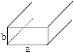
- 0.⑤(㎝)
- 2.5(㎝)
- 3.13(㎝)
- 5(㎝)
(정답률: 알수없음)
42. 어떤 시각에 E층의 임계주파수가 2[㎒]이고, 송수신 점간의 거리가 400(㎞)일 때 최고 사용 주파수(MUF)는? (단, E층의 겉보기 높이는 100(㎞)로 한다)
- 2.26(㎒)
- 4.46(㎒)
- 6.64(㎒)
- 8.74(㎒)
(정답률: 알수없음)
43. 동축케이블의 특성 임피던스는? (단, D: 외부도체의 지름, d :내부도체의 지름)
- D가 클수록, d는 적을수록 커진다
- D가 적을수록, d는 클수록 커진다
- D와 d가 클수록 커진다
- D와 d가 적을수록 커진다
(정답률: 알수없음)
44. 다음 중 집파다이폴을(collector)을 여러 개 설치하여 전파를 모으고 그 기전력을 급전선에 결합시키는 원리를 사용한 단파대의 수신용 안테나는?
- 어골형 안테나
- 롬빅(rhombic)안테나
- 고조파 안테나
- 벤트(bent)안테나
(정답률: 알수없음)
45. 전파를 공중에 발사하여 0.003초 후에 전리층으로부터 반사되어 왔을 때 전리층의 높이는 몇 ㎞ 인가?
- 300
- 450
- 500
- 550
(정답률: 알수없음)
46. 다음중 지표파의 진행에 가장 손실이 적은 지역은?
- 해면이나 수면
- 시가지
- 산악지역
- 사막지대
(정답률: 알수없음)
47. 비동조 급전선은 다음중 어떤 때에 사용하는가?
- 급전선의 특성임피던스가 낮을 때
- 전송손실이 클 때
- 송신기와 안테나가 현저하게 떨어졌을 때
- 사용 주파수가 낮을 때
(정답률: 알수없음)
48. 장중파용 안테나의 특징 중 옳지 못한 것은?
- 설치가 저렴하고 광대역성이다
- 안테나의 이득이 낮다
- 고유파장의 안테나를 얻기 어렵다
- 주로 수직편파에 의한 지표파를 이용하므로 접지가 필요하다
(정답률: 알수없음)
49. 다음 중 혼신의 방해를 가장 적게 하는 방법은?
- 안테나의 접지를 완전하게 한다
- 안테나의 도체 저항을 적게한다
- 지향성 안테나를 사용한다
- 안테나의 높이를 높게 한다
(정답률: 알수없음)
50. 파라볼라 반사기의 역할로 맞는 것은?
- 전자 나팔에서 나온 구면파를 평면파로 변환한다
- 카세그레인 안테나에서 부반사로 사용한다.
- 원편파만 사용할 수 있다
- 광대역 특성을 갖도록 만들어 준다
(정답률: 알수없음)
51. 배열안테나에서 안테나간의 위상차를 주기 위한 소자는?
- 이상기(Phase shifter)
- 감쇄기(Attenuator)
- 마그네트론(Magnetron)
- 아이소레이터(Isolator)
(정답률: 알수없음)
52. 안테나 소자에 연장선륜(LOADING COIL)을 사용하는 이유로 옳은 것은?
- 안테나의 고유파장보다 긴파장의 전파에 공진시키기 위하여
- 안테나의 고유파장보다 짧은 파장의 전파에 공진시키기 위하여
- 안테나의 지향성을 향상시키기 위하여
- 안테나의 복사저항을 적게 하기 위하여
(정답률: 알수없음)
53. 균일 평면 전자파가 대지상을 전파하고 있을 때 대지가 완전도체이면 그림과 같이 전계벡터 E 가 대지에 수직이 되지만, 불완전 도체이면 수직이 되지않게 된다. 대지가 불완전 도체일 때 전계 벡터 E 는 대지에 평행한 성분을 갖게 되는데 이러한 수평성분을 이용하는 안테나는?
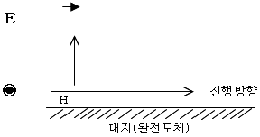
- 애드코크(Adcock) 안테나
- 루-프(Loop) 안테나
- 렌즈(Lens) 안테나
- 비버리지(beverage) 안테나
(정답률: 알수없음)
54. 전파가 전리층에서 받는 감쇠중 제2종 감쇠는?
- E층 투과할 때 받는 감쇠
- F층 투과할 때 받는 감쇠
- E층 또는 F층에서 반사할 때 받는 감쇠
- D층에서 반사할 때 받는 감쇠
(정답률: 알수없음)
55. 그림과 같은 등간격의 점방사원배열이 Endfire Array가 되는조건은?
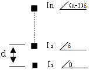
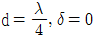
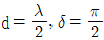
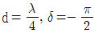
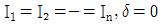
(정답률: 알수없음)
56. 대수 주기형 안테나(Log periodic antenna)에 대한 기술로서 옳지 않는 것은?
- 안테나의 크기와 모양이 비례적으로 커지는 여러개의 안테나소자로 되어있다.
- 주파수의 대수값이 일정한 값만큼씩 달라지는 주파수 때마다 동일한 복사특성을 나타낸다.
- 무지향성의 안테나로 이득이 매우높다.
- 매우 넓은 주파수 대역을 갖는다.
(정답률: 알수없음)
57. 공기중에서 모든 방향으로 균일하게 복사하는 점(点)복사원이 있다. 복사전력이 100[w]일 때, 10[㎾] 떨어진 점에서의 복사전계의 세기는?
- 5.5[㎷/m]
- 10[㎷/m]
- 7[㎷/m]
- 1[㎷/m]
(정답률: 알수없음)
58. 신틸레이션 페이딩(Scintillation Fading)에 대해서 잘못 설명한 것은?
- 송수신점간의 거리가 클수록 전계변동폭이 커진다.
- 전계강도는 2~3[㏈]이하의 진폭으로 수초에서 수십초의 주기로 발생하여 불안정하다.
- 원인은 대기중에 와류에 의하여 유전율이 불규칙한 공기뭉치를 발생하기 때문이다.
- 동계보다 하계에 더 적게 발생한다.
(정답률: 알수없음)
59. 자유공간에 완전 반파장 다이폴 안테나에 대한 전력이득 G가 4인 안테나가 있고 그 복사전력이 50[w]일대 이 안테나의 최대 방사방향의 전계강도는 완전 반파장 다이폴 안테나의 비해서 어떠한가?
- 같다.
- 2배가된다.
- 4배가 된다.
- 1/2배가 같다.
(정답률: 알수없음)
60. 안테나의 급전선(도파관)에 스터브(stub)를 다는 이유는?
- 복사전력을 증폭시키기 위하여
- 안테나의 지향성을 높이기 위하여
- 안테나의 리액턴스 성분을 제거하여 임피던스 정합을 시키기 위하여
- 안테나의 서셉턴스 성분을 제거하여 대역폭을 증가시키기 위하여
(정답률: 알수없음)
4과목: 무선통신 시스템
61. 다음 위성통신의 특징중 장점이 아닌 것은?
- 대용량의 통신가능
- 장거리 통신에 적당
- 지연시간이 없음
- 다원접속이 가능
(정답률: 알수없음)
62. 다음 중 HDTV에 관한 설명으로 틀리는 것은?
- 기존의 TV방식보다 훨씬 섬세하고 치밀하며,선명한 화상과 양질의 음성을 제공하는 TV방식이다.
- 음성신호변조는 아날로그 형식이다.
- 주사선수는 현행방식인 525개의 약 2배인 1,125개이상이다.
- 고품질 영상과 음성을 전송하며, 광대역(27[㎒])의 전송속도와 압축기들을 적용한다.
(정답률: 알수없음)
63. 불감지대(dead zone)가 존재하는 주파수대는?
- 장파
- 중파
- 단파
- 초단파
(정답률: 알수없음)
64. 증폭기를 광대역폭으로 하는 방법에 해당되지 않는 것은?
- 부귀환 방식 응용
- 스태거 동조방식 설계
- 보상회로 첨가
- 증폭기의 다단접속
(정답률: 알수없음)
65. 다음 무선통신방식 중 주파수 대역폭이 가장 넓은 것은?
- 페이징용 FSK 통신
- Cellular 전화
- AM 방송
- TV 방송
(정답률: 알수없음)
66. 항공기에서 VOR과 DME의 두기능을 구비하여 자국의 방위와 거리를 직독하는 장치는?
- LORAN
- DECCA
- TACAN
- OMEGA
(정답률: 알수없음)
67. 공전잡음의 경감대책으로 적절한 것은?
- 접지 안테나를 사용한다.
- 수신기의 대역폭을 넓게 한다.
- 안테나의 실효고를 높인다.
- 무지향성 안테나를 사용한다.
(정답률: 80%)
68. 슈우퍼 헤테로다인 수신기에서 중간 주파수가 만들어지는 가장 중요한 이유는?
- AGC를 걸게 하기위하여
- 혼신을 적게 하기위하여
- 스퓨리어스 발사를 적게 하기위하여
- 낮은 주파수에서 안정된 증폭을 위하여
(정답률: 알수없음)
69. 방송국의 안테나 전력이 10[㎾]에서 250[㎾]로 증가되면 전계강도는 몇 배로되는가? (단, 거리는 일정하다고 한다.)
- 1/5배
- 1/25배
- 5배
- 25배
(정답률: 알수없음)
70. 마이크로파 중계회선 계획시 표준 의사회선의 길이는 몇[㎞]를 적용하도록 규정하는가?
- 25
- 250
- 2500
- 25000
(정답률: 알수없음)
71. PCM 통신방식의 특징 설명으로 틀리는 것은?
- 외부잡음등 방해에 강하고 저질의 전송로에도 사용 할 수 있으며 높은 품질의 장거리 전송이 가능하다.
- 전송로의 손실 변동에 영향을 받지 않는다.
- PCM단국장치는 고급여파기를 사용하여야 한다.
- 점유주파수대역폭이 넓다.
(정답률: 알수없음)
72. 기지국 서비스 지역내의 통화음량을 증가시키기 위한 방법은?
- 송신안테나의 복사이득을 크게 한다.
- 송신출력을 증가시킨다.
- 소규모 셀(cell)로 구성한다.
- 기지국 채널을 감소한다.
(정답률: 알수없음)
73. 무선마이크로파 통신의 전송로상 전파잡음대책을 고려할 때 해당되지 않는 것은?
- 강우(Rain) 마진을 충분히 둔다.
- 공간 다이버시티(site diversity)를 사용한다.
- G/T를 크게하여 C/N을 개선한다.
- 이중편파를 채용한다.
(정답률: 알수없음)
74. 아날로그 시스템과 비교한 디지털 셀룰라 시스템의 특징이 아닌 것은?
- 통화 품질 향상
- 스펙트럼의 효율적 사용
- 통신 보안용이
- 장치의 대형화
(정답률: 알수없음)
75. 진폭변조도가 100%일 때 진폭 변조파전력(Pt)과 반송파(Pc)전력과 관계가 올바른 것은?
- Pt = 1Pc
- Pt = 1.5Pc
- Pt = 2Pc
- Pt = 2.5Pc
(정답률: 알수없음)
76. 다음 중 축적 교환 방식(Store and Forward Switching)과 거리가 먼 것은?
- 메시지 교환
- 가상회선 교환
- 회선교환
- 데이타그램 패킷 교환
(정답률: 알수없음)
77. TRS의 트렁킹(trunking)방식중 가입자가 PTT를 누를 때마다 새로운 채널을 할당하고 PTT를 놓으면 해당채널을 바로 회수하여 대기채널군으로 편입시키는 방식은?
- 통화 트렁킹
- 전송 트렁킹
- 송신 트렁킹
- 수신 트렁킹
(정답률: 알수없음)
78. 위성통신용 안테나로 많이 사용되여 주반사기의 초점과 부반사기의 허초점을 일치시킨 형태의 안테나는?
- 카세그레인 안테나(cassegrain ant)
- 슬로트 안테나(slot ant)
- 파라보릭 안테나(parabolic ant)
- 혼 리프렉터 안테나(horn reflector ant)
(정답률: 알수없음)
79. 통신위성의 종류로서 위성통신업무에 따른 구분이 아닌 것은?
- 방송위성
- 기상위성
- 해사위성
- 위상위성
(정답률: 알수없음)
80. 위성통신업무에 속하지 않는 것은?
- 고정위성업무
- 이동위성업무
- 방송위성업무
- 영상위성업무
(정답률: 알수없음)
5과목: 전자계산기 일반 및 무선설비기준
81. 송신공중선계의 설명으로 옳은 것은?
- 무선통신의 송신을 위한 고주파 에너지를 발생하는장치
- 전파를 보내는 설비로서 송신장치와 송신공중선계로 구성되는 설비
- 송신장치에서 발생하는 고주파에너지를 공간에 복사하는 설비
- 무선통신을 하기 위한 신호발생 계통설비와 부가 설비
(정답률: 알수없음)
82. 오퍼레이팅 시스템의 성능평가시 고려사항이 아닌 것은?
- 처리능력(Throughput)
- 응답시간(Turn Around Time)
- 편리성(Convenience)
- 사용가능도(Availability)
(정답률: 알수없음)
83. 산술 및 논리연산의 결과를 일시 보관하는 레지스터는?
- Accumulator
- Storage 레지스터
- Arithmetic 레지스터
- Instruction 레지스터
(정답률: 알수없음)
84. 16 kbyte의 주기억장치를 구성하려면 최소한 몇 개의 어드레스선이 필요한가?
- 10
- 12
- 14
- 16
(정답률: 알수없음)
85. 선박국의 디지털선택호출용 송신설비의 주파수 허용편차로 할당한 것은?
- 5㎐
- 10㎐
- 20㎐
- 50㎐
(정답률: 알수없음)
86. 다음중 데이터 베이스의 특성에 속하지 않는 것은?
- 중복데이타 배제
- 비밀보호장치의 유지
- 데이터 상호간의 연결성
- 프로그램과 데이터의 종속성
(정답률: 알수없음)
87. 다음 중 보조기억장치의 특징이라 할 수없는장치는?
- 주기억장치에 비교해 가격이 저렴하다.
- 기억내용을 안전하게 오래 보관할 수 있다.
- 데이타를 읽는 속도가 주기억 장치보다 빠르다.
- 기억용량을 주기억 장치보다 크게 할 수 있다.
(정답률: 알수없음)
88. 다음 중 레지스터의 결과 값이 다른 것은? (단, A레지스터는 0×55 라는 값이 저장되어있다).
- AND A, 0×00
- XOR A
- OR A, 0×00
- AND A, 0×AA
(정답률: 알수없음)
89. 수신설비의 성능조건과 관계 적은 것은?
- 명료도가 충분할 것
- 내부잡음이 적을 것
- 정합이 충분할 것
- 선택도가 클 것
(정답률: 알수없음)
90. 공중선 전력의 표시방법중 평균전력은 어느것으로 표시하는가?
- PX
- PZ
- PY
- PC
(정답률: 알수없음)
91. 다음 중 전파법의 규정에 의한 형식검정을 받아야 하는 무선설비의 ????? 아닌 것은? (문제 오류로 복원중입니다. 정확한 내용을 아시는 분께서는 오류신고를 통하여 내용 작성 부탁드립니다.)(정답은 4번입니다.)
- 선박에 설치하는 경보자동수신기
- 비상위치지시용 무선표지설비
- 디지털 선택 호출전용 수신기
- 주파수 공용 무선전화 장치
(정답률: 알수없음)
92. (011111100000)2의 값을 갖는 레지스터의 내용을 오른쪽으로 네 번 시프트 시켰다면 실제로 이 레지스터가 수행한 연산은 무엇인가?
- added -400
- multiplied by 4
- divided by 4
- divided by 16
(정답률: 알수없음)
93. 다음중 무선국이 행하는 업무의 설명이 틀린 것은?
- 고정업무 : 일정한 고정지점간의 무선통신 업무를 말한다.
- 무선방향탐지업무 : 무선국 또는 물체의 방향을 결정하기 위하여 전파를 수신하여 행하는 업무
- 무선표지업무 : 이동국에 대하여 방향또는 방위를 결정하게 할 수 있도록 하기위한 무선항행업무
- 무선항행업무: 육상국이나 이동국 상호간의 무선통신업무
(정답률: 알수없음)
94. 입출력 과정에서 CPU의 역할이 가장 큰 방식은?
- Programmed I/O
- Interrupt-Driver I/O
- DMA
- Channel I/O
(정답률: 알수없음)
95. 무변조 상태에서 무선주파수 1[㎐]사이에 송신기에서 공중선계의 급전선에 공급되는 평균전력은?
- 평균전력
- 규격전력
- 첨두전력
- 반송파전력
(정답률: 알수없음)
96. 다음 각 자료형 중에서 가장 적은 비트의 수를 필요로 하는 것은?
- 실수형 자료(real type)
- 정수형 자료(integer type)
- 문자형 자료(character type)
- 논리형 자료(boolean type)
(정답률: 알수없음)
97. 다음중 debugging과 관계가 적은 것은?
- coding
- single step
- trace
- dump
(정답률: 알수없음)
98. 다음중 극초단파(UHF)에 해당하는 것은?
- 30[㎒]~300[㎒]
- 300[㎒]~3000[㎒]
- 3[㎓]~30[㎓]
- 30[㎓]~300[㎓]
(정답률: 알수없음)
99. 해상이동업무를 행함에 있어서 사용하는 주파수의 표시는 반송 주파수로 하고 그 할당 주파수를 반송주파수 보다 140㎐ 높은 주파수로 표시하지 아니하는 전파형식은?
- R3E
- H3E
- G3E
- J3E
(정답률: 알수없음)
100. 다음 중 무선설비의 안전시설기준에서 고압전기란?
- 750볼트를 초과하는 저주파 및 직류전압과 600볼트를 초과하는 교류전압
- 600볼트를 초과하는 저주파 및 직류전압과 750볼트를 초과하는 교류전압
- 750볼트를 초과하는 고주파 및 교류전압과 600볼트를 초과하는 직류전압
- 600볼트를 초과하는 고주파 및 교류전압과 750볼트를 초과하는 직류전압
(정답률: 알수없음)